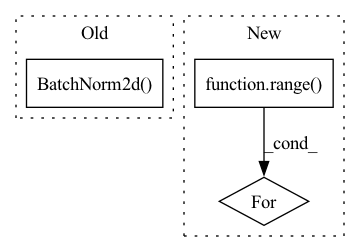

Pattern ID :11986

Before Change
stride=2,
padding=1,
output_padding=1),
nn.BatchNorm2d(hidden_dims[-1]),
nn.LeakyReLU(),
nn.Conv2d(hidden_dims[-1], out_channels= 3,
kernel_size= 3, padding=1),
After Change
nn.LeakyReLU())
)
for _ in range(6):
modules.append(ResidualLayer(hidden_dims[-1], hidden_dims[-1]))
modules.append(nn.LeakyReLU())
In pattern: SUPERPATTERN
Frequency: 3
Non-data size: 3
Instances
Fragment ID: 40528394
Project Name: antixk/pytorch-vae
Commit Name: bb1f447818c4ad08c3fb2f9afd0de163534f81ea
Time: 2020-02-14
Author: anandkrish894@gmail.com
File Name: models/vq_vae.py
M Class Name: VQVAE
N Class Name: VQVAE
M Method Name: __init__(7)
N Method Name: __init__(7)
M Parent Class: BaseVAE
N Parent Class: BaseVAE
M File Name: models/vq_vae.py
N File Name: models/vq_vae.py
M Start Line: 143
M End Line: 214
N Start Line: 88
N End Line: 160
'>
Before Change
self.conv2 = nn.Sequential(
// pw
nn.Conv2d(oup, hidden_dim, 1, 1, 0, bias=False),
nn.BatchNorm2d(hidden_dim),
nn.ReLU(inplace=False),
// dw
nn.Conv2d(hidden_dim, hidden_dim, 3, 1, 1, groups=hidden_dim, bias=False),
After Change
)
self.conv2 = torch.nn.ModuleList()
for i in range(n):
self.conv2.append(IRBlock(oup, hidden_dim))
def forward(self, x):
x = self.conv1(x)
'>
Fragment ID: 40528393
Project Name: fire717/movenet.pytorch
Commit Name: 6eb59cd47bfde753530ed236335910bed9ba7c1d
Time: 2022-08-12
Author: fire15@126.com
File Name: lib/models/movenet_mobilenetv2.py
M Class Name: InvertedResidual
N Class Name: InvertedResidual
M Method Name: __init__(6)
N Method Name: __init__(6)
M Parent Class: nn.Module
N Parent Class: nn.Module
M File Name: lib/models/movenet_mobilenetv2.py
N File Name: lib/models/movenet_mobilenetv2.py
M Start Line: 83
M End Line: 113
N Start Line: 98
N End Line: 120
'>
Before Change
nn.Conv2d(in_channels=8, out_channels=3, kernel_size=5),
nn.Dropout(dropout_p),
nn.LeakyReLU(negative_slope=0.01, inplace=True),
nn.BatchNorm2d(num_features=3),
nn.MaxPool2d(2),
))
After Change
nn.MaxPool2d(2),
))
for _ in range(num_conv_layers):
self.image_layers.append(nn.Sequential(
nn.Conv2d(in_channels=8, out_channels=8, kernel_size=5),
nn.Dropout(dropout_p),
nn.LeakyReLU(negative_slope=0.01, inplace=True),
'>
Fragment ID: 40528389
Project Name: xushenlz/parksim
Commit Name: ec66e2d8e096621262c882cb331d5b4387849163
Time: 2022-04-05
Author: lacayomatt@gmail.com
File Name: python/parksim/trajectory_predict/vanilla_transformer/network.py
M Class Name: SmallRegularizedCNN
N Class Name: SmallRegularizedCNN
M Method Name: __init__(5)
N Method Name: __init__(3)
M Parent Class: nn.Module
N Parent Class: nn.Module
M File Name: python/parksim/trajectory_predict/vanilla_transformer/network.py
N File Name: python/parksim/trajectory_predict/vanilla_transformer/network.py
M Start Line: 43
M End Line: 98
N Start Line: 39
N End Line: 78